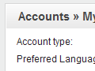
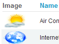
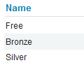
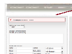
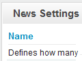
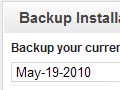

Getting Started with ApPHP Business Directory (v2.0.0 or above)
-
1. General and Site Settings.
- 1.1 Setting up site parameters.
- 1.2 Banning Emails/IP Addresses.
- 1.3 Countries Management.
- 1.4 Preview.
- 2.1 My Account.
- 2.2 Statistics.
- 2.3 Roles & Privileges.
- 2.4 Admins Management.
- 2.5 Customers Management.
- 3.1 Listings Settings.
- 3.2 Locations.
- 3.3 Integration.
- 3.4 Categories.
- 3.5 Listings.
- 4.1 Currencies.
- 4.2 Advertise Plans.
- 4.3 Orders.
- 4.4 Statistics.
- 6.1 Editing Homepage.
- 6.2 Creating new pages.
- 6.3 Editing pages.
- 6.4 Editing system pages.
- 6.5 Remove/Restore pages.
- 8.1 Email Templates.
- 8.2 Mass Mail.
- 9.1 Modules Management.
- 9.2 Customers Module.
- 9.3 Inquiries Module.
- 9.4 Payments Module.
- 9.5 Contact Us Module.
- 9.6 Comments Module.
- 9.7 Gallery Module.
- 9.8 Banners Module.
- 9.9 News Module.
- 9.10 FAQ Module.
- 9.11 AdSense module.
- 9.12 Backup & Restore Module.
- 10.1 Registrations & Login.
- 10.1.1 Customer Registration.
- 10.1.2 Customer Login.
- 10.2 Customer Control Panel.
- 10.2.1 Dashboard.
- 10.2.2 Edit Account.
- 10.2.3 Listings.
- 10.2.4 Advertise.
- 10.2.5 Orders.
- 10.2.6 Inquiries.
1. General and Site Settings.
This section describes how to manage a general settings of your site.
[top]
1.1 Setting up site parameters.

Select Settings from General Menu. On this page you can easy change/manage important parameters of your site. You will see there 8 Tabs: General Settings, Visual Settings, Datetime & Price Settings, Email Settings, Templates & Styles, Server Info, Site Info and Cron Jobs
On General Settings Tab you can change:
- Site Offline
- Offline Message
- SEO URLs
- WYSIWYG Editor
- RSS Feed Type
- Caching / Caching lifetime - caching for pages
- Header Text
- Slogan
- Footer Text
- Tag <TITLE>
- Meta Tag <KEYWORDS>
- Meta <DESCRIPTION>
- Date Format
- Time Zone
- Price Format
- Mailer Type
- Email Address
- SMTP parameters
- Template
- PHP and MySQL versions
- Server parameters
- etc
- Google and Alexa
- Batch
- Non-batch
[top]
1.2 Banning Emails/IP Addresses.

Select a Ban List from the General Menu. On this page you can easy add/change or remove banned emails or IP addresses.
[top]
1.3 Countries Management.
Select Countries from the General Menu. On this page you can manage a list of countries with a standard MicroGrid page. You can add, edit or delete existing country. Also you may change a priority order, activate it etc.
[top]
1.4 Preview.
The Preview feature allows admin to view the site without logging out. To view the site's Front-End simply click on General -> Preview. If you want back to Administrator Panel click the [Back to Admin Panel] link that will appear instead of site's slogan text.
2. Accounts Management.
This section describes how to manage site accounts.
[top]
2.1 My Account.
{kind=link}
Log into Admin Panel, using administrator username and password. Then select My Account from the Accounts Menu or from the top links of the page. You will see a page, where you can change your email, password and preferred language. To change data simply enter new values and then click Change button.
[top]
2.2 Statistics.
Select Statistics from the General Menu. On this page you can view a general statistics of your site:
- Customers (Map Overlay)
- Customers (Registrations)
- Customers (Logins)
- etc
[top]
2.3 Roles & Privileges.
Select Roles & Privileges from the Accounts Menu. You will see a page, where existing site roles are defined: Owner, Main Admin and Simple Admin. You may specify the privileges for each role by clicking a [ Privileges ] link. Privileges for Site Owner cannot be changed by anyone. Generally, the Main Admin is the role that has all rights, like a Site Owner (but may be deleted by the Owner) and a Simple Admin type is the type which has reduced rights.
[top]
2.4 Admins Management.
Select Admins from Accounts -> Admins Management menu. On this page you can manage all site administrator accounts. You may add, edit or delete existing accounts. When you create a new admin account you have to define an account type(role): Simple Admin or Main Admin. The privileges for selected role will be applied automatically for created account.
[top]
2.5 Customers Management.
Customer Groups:
Select Customer Groups from the Accounts Menu. On this page you can add, edit or delete existing groups of customers. You have to enter group name and description (optional). Customers can be assigned to the one of existing groups.
Customers:
Select Customers from the Accounts Menu. You will see the Customers Management page. On this page you can add, edit or delete existing accounts of customers.
3. Listings Management.
This section describes how to manage listings and listing categories.
[top]
3.1 Listings Settings.
{kind=link}
Listings Settings.
This page allows you to define listing settings, like:
- Specifies whether to show Categories side block or not
- Specifies whether to show Categories home block or not
- Specifies whether to show categories images or not
- Specifies the number of columns in the table of categories
- Specifies whether to allow pre-moderation for listings
- Specifies whether to show Featured Listings side block or no
- Specifies whether to show Recent Listings side block or no
- Specifies a maximum number of listings that could be displayed on page
- Specifies whether to show Directory Statistics side block or no
- Defines a length of display listing name in a side block (in chars)
- Specifies whether to show expired listings until Cron Job close them or not
- Specifies whether to allow Multiple Categories for Listings: 1 - one category, 2 - two categories etc.
- Specifies a number of sub-categories for each category that could be displayed on home page
- Specifies whether to add watermark to listing images or not
- Watermark text that will be added to images
[top]
3.2 Locations.
On this page administrator can define locations and sub-locations that will be used for listings. Each listing may select location and sub-location it related to.
[top]
3.3 Integration.
Integrated Inquiry Widget allows you to integrate Inquiry Form engine with another existing website. To do it open Listings Management -> Settings -> Integration page and copy the generated code to the appropriate place of your website.
[top]
3.4 Categories.
This page allows you to manage listing categories. You may add/edit or delete category, change category display order etc. You may also translate category into all languages, installed on your site. To create new sub-directory click [ Sub-Categories ] link and then add a new sub-category.
[top]
3.5 Listings.
Listings page allows you to manage your listings: add/edit or delete them. When you add a new listing you have to define related category, upload images, define listing name etc. You may also define display order for the listing and translate description into other languages, installed on your site.
4. Payments.
This section describes how to work with Payments Module.
[top]
4.1 Currencies.
{kind=link}
Select Currencies from the Payments menu. You will see a Currencies Management page. This page allows you to manage currencies, used on your site for purchasing Advertise Plans. You can add/edit or delete existing currencies. One currency may be defined as a "default", that means it will be used as a default currency for your site. You have define a rate of each currency relatively to the "default" one.
[top]
4.2 Advertise Plans.
Select Advertise Plans from the Payments menu. On this page you can manage Advertise Plans, change and edit plans settings. One plan may be defined as a "default", that means it will be used as a default plan for your site. This plan will be applied automatically to customer's account after succesful registration.
[top]
4.3 Orders.
Orders page gives you possibility to manage existing orders, placed by admin or by customers. On this page you can view orders description, change orders status and filter them by date, customer name etc. You may also send invoices and print selected orders.
[top]
4.4 Statistics.
Statistics allows you to track amount of orders groped by months, learn how your customers are distributed by countries and get some other useful information.
5. Menu Management.
This section describes how to manage menu categories.
[top]
5.1 Creating menu categories.

Click Add New Menu from the Menus Management. In the textbox enter a proper name for menu category and select a placement (left, top, right or bottom - depending on whether your template supports it) from dropdown list, also choose a language. You may also define access level for the menu: All(public) or only Registered users. Press Create button to finish adding new menu category process. Menu categories will appear sorted by order from smallest to highest (last added category automatically gets the lowest priority).
[top]
5.2 Editing menu categories.
To edit existing menu category - select Edit Menus from the Menus Management page and then click an appropriate category from the list. Perform all changes you need and then press on Save Changes button. You may also change a display order of each menu category.
If you want to delete existing menu category - go to Edit Menus page, then select appropriate menu category from the list and click a Delete link at the right side.
6. Pages Management.
This section describes how to manage pages.
[top]
6.1 Editing Homepage.
To edit Homepage - select Edit Home Page from the Pages Management menu. Perform all changes you need and then press Save Changes button. You may also define meta tags for your Homepage, like: title, description, keywords and also some other settings.
If you need to insert/upload images - click Insert Image icon from the toolbar of WYSIWYG editor, then upload/select your image and press Submit button.
[top]
6.2 Creating new pages.
Click Add New Page from the Pages Management menu. In the Page Header textbox enter a proper name for this page. Choose appropriate value from dropdown list to connect this page to some menu and enter a text in Page Text textarea. You may also define is the page will be an article or just a link, allow/block comments, define access level, meta tags, show or not show this page in search results, publish or just save changes without publishing etc. Click Create button to finish the process.
If you need to insert/upload images - click Insert Image icon from the toolbar of WYSIWYG editor, then upload/select your image and press Submit button.
[top]
6.3 Editing pages.
To edit existing page - click Edit Pages from the Pages Management menu, then select an appropriate page from the list. Perform all changes you need and then press Save Changes button.
If you need to insert/upload images - click Insert Image icon from the toolbar of WYSIWYG editor, then upload/select your image and press Submit button.
[top]
6.4 Editing system pages.
To edit system pages - click Edit System Pages from the Pages Management menu, then select an appropriate page from the list. Perform all changes you need and then press Save Changes button.
[top]
6.5 Remove/Restore pages.
To remove existing page - click Edit Pages from the Pages Management menu, then select an appropriate page from the list and click Remove link from the right side. This page will be placed in the Trash.
To restore removed page click Trash from the Pages Management, find an appropriate page and click Restore link. The page will be restored. If you want to permanently delete this page, click Delete link.
7. Languages Settings.
This section describes how to manage languages and define language settings.
[top]
7.1 Inserting/Editing Language.

Click Languages from the Languages Settings menu. On this page you will see a list of existing languages. You can add new language or edit existing, change display order etc. When you add or edit existing language you need to insert a name of the language, abbreviation, text direction, icon image and some other data. When all needed data is entered - press Create/Update button to save it. You have to define one language to be a default language of the site.
When you add new language the system creates for it a copy of vocabulary (a list of predefined constants, used by the system) from the default language and you will need to translate them into the new language.
[top]
7.2 Editing language vocabulary.
Click Vocabulary from the Languages Settings menu. On this page you can edit the vocabulary constants of existing languages. To change the text of constant, select an appropriate language from dropdown list, then click [Edit] link and enter new text in a textarea. You may use Google automatic translation to help yourself in this work. To do this simply past in textarea default language text and then click on Translate via Google button (works for Google paid account only).
You may also update your vocabulary by uploading a vocabulary file (if you created such file before or have it from the previous instalaltion). To do this simply click [Upload from File] link, then select vocabulary file, language to update and press on upload and Process button.
8. Mass Mail & Email Templates.
This section describes how to work with Mass Mail & Email Templates.
[top]
8.1 Email Templates.
To edit Email Templates go to Mass Mail & Templates -> Email Templates. On this page you can see a list of existing email templates. Email Templates are managed with a standard MicroGrid page. You can add, delete or edit existing records. There are some templates that signed as "system" templates, that cannot be deleted, because they are used by the system.
[top]
8.2 Mass Mail.
With the Mass Mail feature, it's possible to create and send powerful mass mail messages to registered customers and/or admins. To do this go to Mass Mail & Templates -> Mass Mail. On this page you can select a template, define targeting group of receivers (or send a test email) and prepare the text of email message. There are some pre-defined constants that may be used in the text of email and will be replaced with appropriate values before sending the email. For example: {YEAR} will be replaced with the current year in YYYY format, {WEB SITE} with web site URL etc.
9. Modules.
This section describes how to work with embedded modules.
[top]
9.1 Modules Management.

Select Modules Management from the Modules Menu. On this page you can easy install/uninstall existing modules, for example: News, Backup etc. To do this click on [Edit], perform changes and then press Update button.
[top]
9.2 Customers Module.
This section describes how to work with the Customers Module.
Customers Module settings.
This page allows you to define Customers settings, like:
- Specifies whether to allow adding new users by Admin
- Defines whether confirmation (which type of) is required for registration
- Specifies whether to allow customers to login to the site
- Specifies whether to allow customers to register
- Specifies whether to allow image verification (captcha) on customer registration page
- Specifies whether to allow customers to restore their passwords
- Specifies whether to allow Remember Me feature
- Specifies whether to alert admin on new user registration
- Specifies whether to allow changing user password by Admin
[top]
9.3 Inquiries Module.
{kind=link}
This section describes how to work with the Inquiries Module. The Enquiries Mmodule allows visitors on your site to submit requests to businesses in specific category or directly to obtain from them the necessary information, get offers etc.
Inquiries module settings.
This page allows you to define Inquiries settings, like:
- Specifies a maximum number of replies that visitor can retrieve for each inquiry
- Specifies whether to allow visitors to send direct inquiries to businesses
- Defines whether to show Last Inquiries side block or not
- The maximum number of days to keep the inquiries history
Inquiries Management.
On this page administrator can manage inquiries: view, activate, edit or delete its.
[top]
9.4 Payments Module.
This section describes how to work with the Payments Module.
This page allows you to define Booking Module settings, like:
- Enable/Disable 'On-line Order' payment type
- Enable/Disable collecting of credit card info for 'On-line Orders'
- Enable/Disable 'PayPal' payment type
- PayPal (business) email
- Enable/Disable '2CO' payment type
- Specifies 2CO Vendor ID
- Enable/Disable 'Authorize.Net' payment type
- Specifies Authorize.Net Login ID and Transaction Key
- Default payment processing system
- Specifies default VAT value for order (in %)
- Enable/Disable sending a copy of order to admin
- Specifies mode for Booking Module: DEMO/REAL
- Defines a maximum number of allowed orders (not completed) per customer
[top]
9.5 Contact Us Module.
This section describes how to work with the Contact Us Module.
Contact Us Module settings.
This page allows you to define Contact Us settings, like:
- The email address, that will be used to get sent information
- The keyword that will be replaced with Contact Us form (copy and paste it into the page)
- Specifies whether to allow time delay between sending emails.
- Defines a length of delay between emails in seconds.
- Specifies whether to allow image verification
[top]
9.6 Comments Module.
This section describes how to work with the Comments Module.
Comments module settings.
This page allows you to define Comments settings, like:
- Specifies whether to allow comments to articles
- Type of users, who can post comments
- The maximal length of a comment
- Specifies whether to allow image verification (captcha)
- How much comments will be shown on one page
- Specifies whether to allow pre-moderation for comments
- The maximum pending time for deleting of comment in minutes.
Comments Management page.
On this page administrator can manage comments: view, approve, deny or delete them.
[top]
9.7 Gallery Module.
This section describes how to work with the Gallery Module.
Gallery Settings.
This page allows you to define Gallery settings, like:
- Allowed types of Image Gallery
- Allowed types of Video Gallery
- The keyword that will be replaced with gallery (copy and paste it into the page)
- Album icon width
- Album icon height
- Number of album icons per line
- The keyword that will be replaced with a certain album images (copy and paste it into the page)
- Defines a wrapper type for gallery
- Specifies whether to show count of images/video under album name
Gallery Management.
The Gallery module allows you to create and manage gallery albums on your site. To do this go to Modules -> Gallery -> Gallery Management. On this page you will see a list of existing albums. Albums are managed with a standard MicroGrid page. You can add, delete or edit albums info, define a type of album: images or video etc. To upload/delete images from the certain album - click Upload link. You will be redirected to the Album Items pages, where you could add (upload) and manage album items.
[top]
9.8 Banners Module.
This section describes how to work with the Banners Module.
Banners Settings.
This page allows you to define Banners settings, like:
- Whether banners module is active or not
- Type of banner rotation
- Banners rotation delay in seconds
- Specifies whether to allow using of HTML in slideshow captions or not
Banners Management.
The Banners module allows you to create (upload) and manage banners on your site. To do this go to Modules -> Banners -> Banners Management. On this page you will see a list of existing banners, that are managed with a standard MicroGrid page. You can add, edit or delete banners, upload banner images etc.
[top]
9.9 News Module.
{kind=link}
This section describes how to work with the News Module.
News Settings.
This page allows you to define News settings, like:
- How many news will be shown in news block
- Length of news header in block
- Using of RSS channel for news
- Defines whether to show News side block or not
- Defines whether to show Newsletter Subscription block or not
Creation and Management.
The News module allows you to create and manage news on your site. To do this go to Modules -> News -> News Management. On this page you will see a list of previously added news. News are managed with a standard MicroGrid page. You can add, edit or delete news records.
There are two type of news that may be created: news or events. If you create event, visitors could register to this event via online form. All registered users may be viewed via Modules -> News -> News Management -> events()
Subscription Management (Newsletter Subscription).
The News module allows you to create and manage Mailing Lists on your site. You may place a Subscription block on the Front-End of your site and allow visitors to subscribe for news or manually add/remove subscribers via Modules -> News -> Subscription Management page. To send newsletter for subscribers go to Mass Mail -> Templates -> Mass Mail page, then select from Email Address dropdown box "Newsletter Subscribers", prepare the newsletter text and click Send button.
[top]
9.10 FAQ Module.
FAQ Settings.
This page allows you to define Banners settings, like:
- Whether FAQ module is active or not
FAQ Management.
The FAQ module allows you to create FAQ categories knowladge base. To do this go to Modules -> FAQ -> FAQ Management. On this page you will see a list of existing FAQ categories. You can add, edit or delete categories records. Once FAQ category is created, you may add category questions and answers. To do this simply click on "Question" link of appropriate category and on the new page create/edit the pairs: question/answer.
[top]
9.11 Adsense Module.
Adsense module allows you to show advertisements directly in your blog.
You may enter a code for vertical and/or horizontal banners and also define some other important parameters.
Adsense module settings.
- Code for vertical banner
- Code for horizontal banner
- Which part of AdSense blocks is active: horizontal, vertical, both or none
[top]
9.12 Backup & Restore Module.
{kind=link}
Creating a backup.
This script allows you easily create backup of your database. To do this go to Modules -> Backup & Restore -> Backup Installation. On this page you can see a list of existing backups. If you want to add new backup press Backup button. After the backup is complete it will appear in the list below.
Restoring from backup.
To restore database from existing backup go to Modules -> Backup & Restore -> Backup Restore page and look on the list of existing backups. Select a backup you want to restore and click on Restore link at the right side. After backup restore is complete, refresh the site or re-login.
10. Customer Accounts.
This section describes the main features of the customer accounts, registration and login process and working with a customer control panel.
[top]
10.1 Registration & Login.
10.1.1 Customer Registration.
This takes just a couple of minutes. To create/register a customer account type in your browser http://{your site}/index.php?customer=create_account. Enter a name, an email address, choose a password and enter all other required information. After your registration is confirmed (depends on the systems settings: auto-approval, email confirmation or admin approval) you could log into customer control panel.10.1.2 Customer Login.
To login as a customer, type in your browser http://{your site}/index.php?customer=login. Enter your username, password and click Login button. You may also login from the Authentication block placed at the side column.Automatic sign-in. If you don't want to enter your username and password every time you want to access your account, check the box next to "Remember Me" near the Password field on the login page. Unless you delete your browser cookies, you won't be asked for your password for 14 days.
[top]